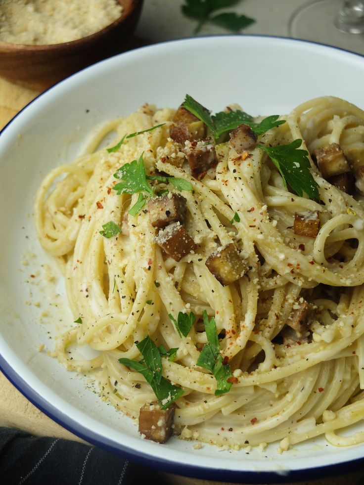

Todas as Receitas Vegetarianas


Yakissoba de Legumes
Macarrão oriental salteado com legumes frescos.
Vegetariano
Japonesa
 Chef Hiroshi
Chef Hiroshi


Nhoque de Batata Doce
Nhoque saudável feito com batata doce e molho de tomate fresco.
Massas
Vegetariano
 Chef Light
Chef Light

 Chef Verde
Chef Verde
Carbonara Vegana
Versão vegetal da carbonara com cogumelos e molho cremoso de castanhas.
Massas
Vegetariano
Chef Verde